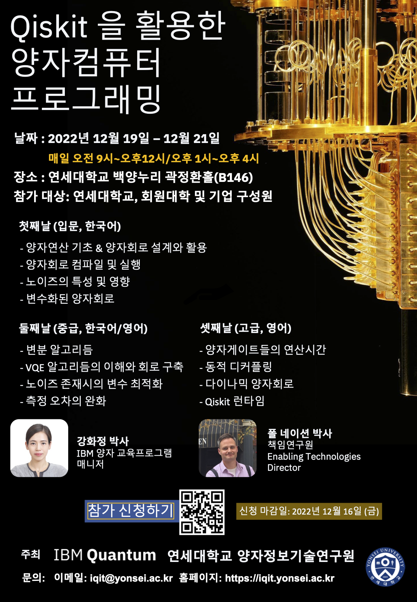

Using Qiskit and IBM Quantum Hardware#
Overview#
An intensive three day workshop focused on building up attendees knowledge of Qiskit and IBM Quntum systems and services.
Details#
Date: December 19th-21st, 2022
Location: KwakJungHwan Hall (B146), Baeyangnuri, Yonsei University, Seoul Korea

Workshop materials#
Files |
|---|